Gallery of Maps

I decided to join the 2024 #30DayMapChallenge to expand my mapping/cartography skills. The goal of this challenge is to create a map every day for 30 days during the month of November, based on a unique theme each day.
Learn more about the annual challenge here: 30DayMapChallenge.
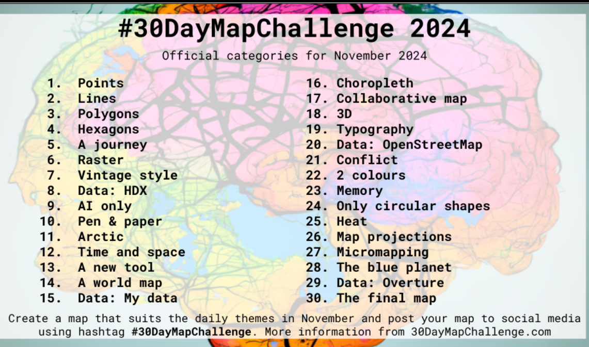
Week 1 served as a foundational warm-up, focusing on the basics of GIS data. We worked with points, lines, and polygons, gradually exploring the intricacies of geospatial visualization. Day 4 introduced hexagon grids, while by Day 7, we embarked on raster analysis and vintage mapping techniques. Here's the breakdown of the week:
I began by processing elevation data from Pokhara. The DEM was clipped and downsampled, converted into point data, and symbolized using graduated sizes and colors to represent elevation values effectively. This provided a clear visualization of the elevation variation across Pokhara.
Tools: ArcGIS Pro
On Day 2, I focused on creating contour lines from elevation data of Biratnagar. The lines were symbolized with varying thickness to enhance the visualization of elevation gradients over the region. This method effectively highlighted the topographic characteristics of Biratnagar's landscape.
Tools: ArcGIS
Using polygon data, I developed a detailed land use/land cover (LULC) map of Pokhara. This involved classifying the area into various categories such as urban, agricultural, forested, and water bodies. Symbology was carefully designed to ensure that the map conveyed information clearly and aesthetically.
Tools: ArcGIS
On Day 4, I utilized Land Surface Temperature (LST) data from Butwal to create a hexagonal grid map. This approach allowed for a detailed spatial analysis of temperature variations, with each hexagon representing an average value. The hexagonal visualization added a modern and precise look to the map.
Tools: ArcGIS
Mapped trekking routes from Pokhara to Annapurna Base Camp (ABC), capturing key waypoints, elevation changes, and trail difficulty. The map provided an insightful representation of the journey, useful for both trekkers and planners. This polyline data offered a comprehensive view of the trekking experience.
Tools: ArcGIS
For Day 6, I performed a raster analysis using NDVI (Normalized Difference Vegetation Index) data from Butwal. This helped identify vegetation health and density across the region. The raster layer was carefully styled to highlight variations in vegetation cover, providing valuable ecological insights.
Tools: ArcGIS
The final day involved creating a vintage-style map of Lakeside, Pokhara. Building footprint data was extracted using Overpass Turbo, and cartographic techniques were applied to give the map a historical look. Muted tones, decorative borders, and classic symbology combined to create a timeless aesthetic.
Tools: ArcGIS Pro
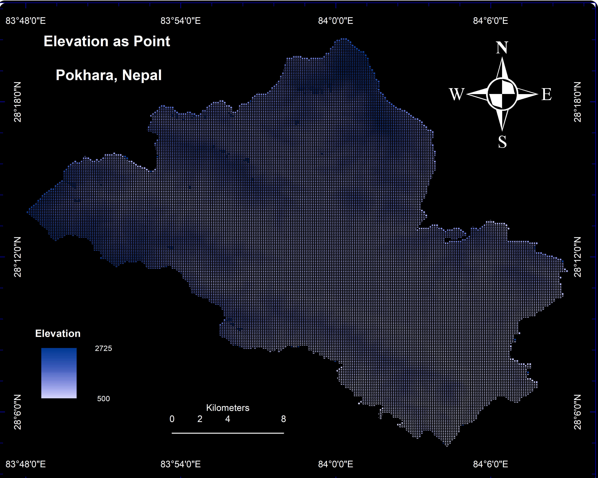
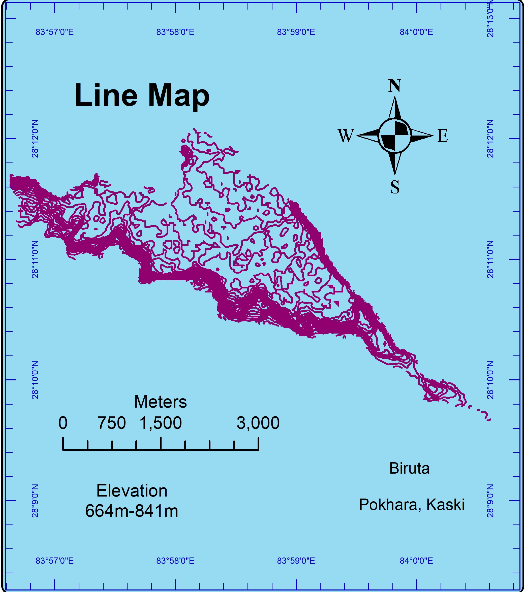
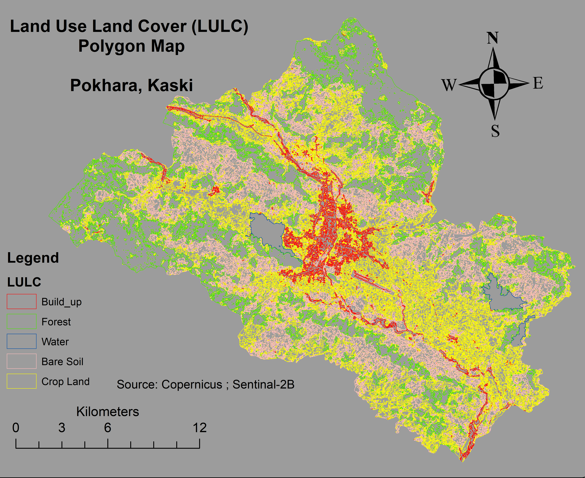
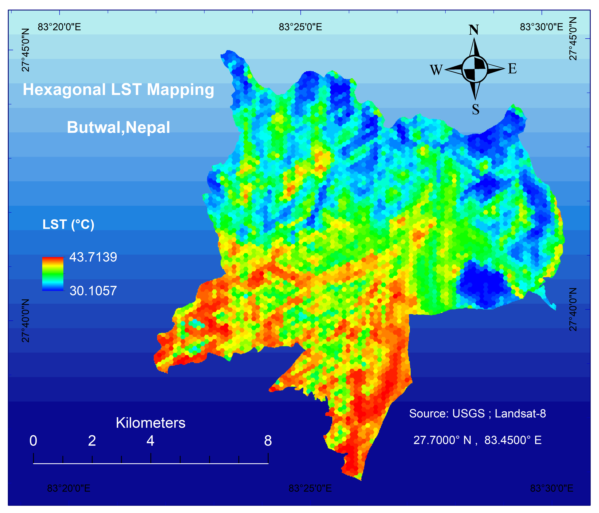
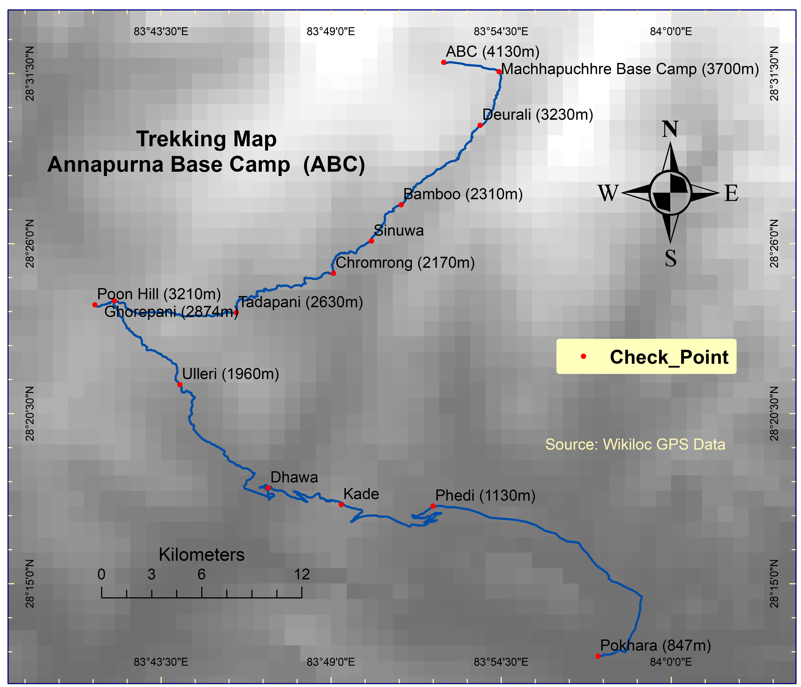
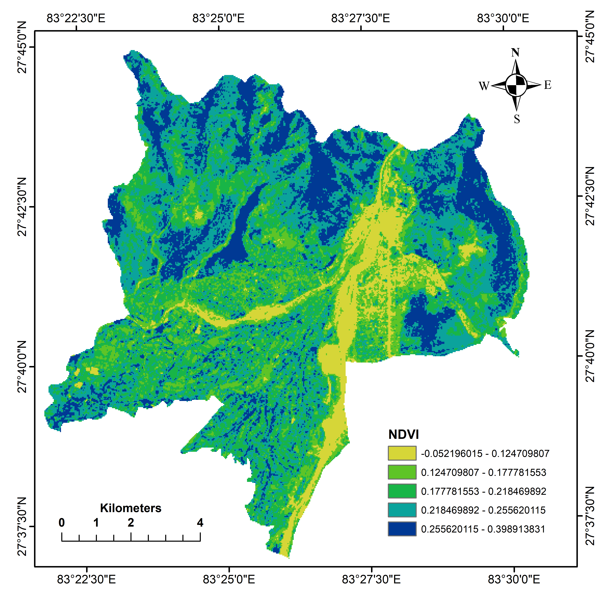
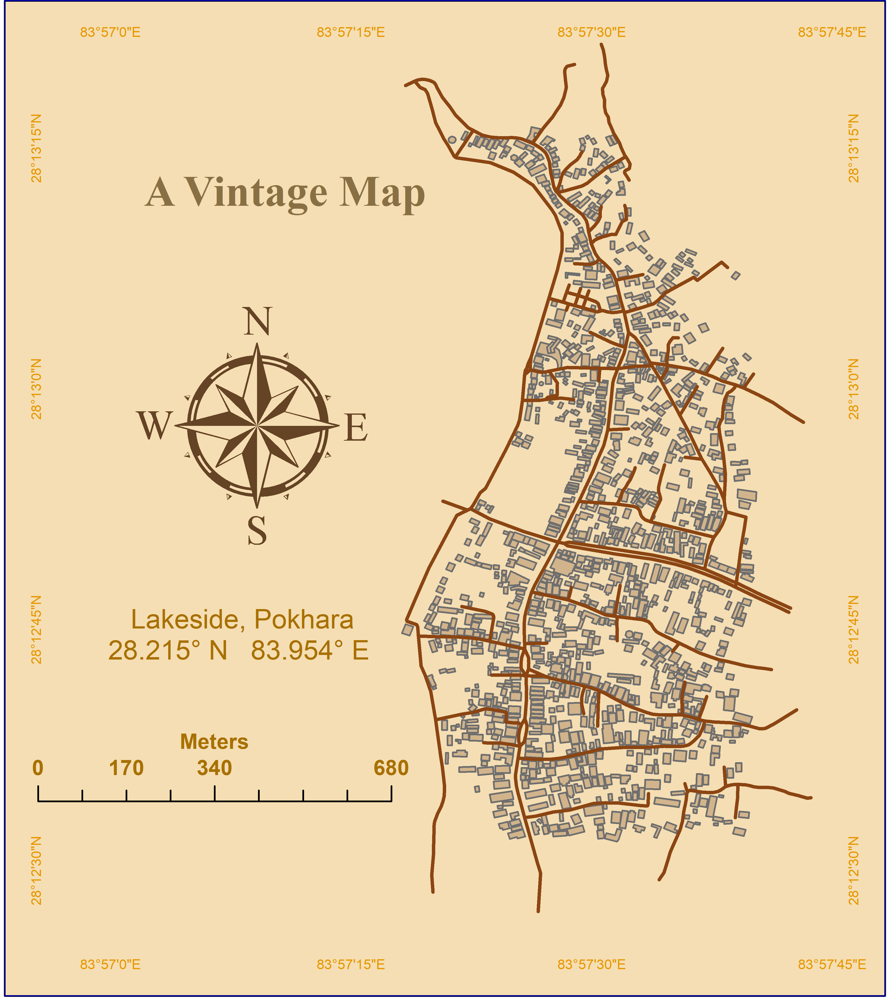
In Week 2, I focused on exploring various mapping techniques and tools. From humanitarian data exchange to AI-driven maps, this week included creative experimentation in geospatial analysis. Each day introduced a new theme, helping me broaden my skills in the field of geospatial technologies. Here’s the breakdown of the week:
Utilized Humanitarian Data Exchange (HDX) datasets to map roads and hospitals in Bharatpur, Nepal. Created a distance-to-hospital raster map to analyze accessibility, helping to visualize healthcare reach and infrastructure planning.
Tools: HDX Datasets, ArcGIS
Leveraged AI tools such as ChatGPT and DALL-E to generate a conceptual map of "Engineering Future Cities." This experiment explored AI’s potential in geospatial visualization and urban planning perspectives.
Tools: DALL-E, ChatGPT, Stable Diffusion
Created a simple hand-drawn map of Australia using pencil and paper. This exercise focused on traditional cartographic techniques, emphasizing manual skills in geographic representation.
Tools: Pencil, Paper
Mapped key Arctic wildlife habitats in Greenland, focusing on environmental factors affecting biodiversity. The visualization highlighted species distribution and the impact of climate change on their habitats.
Tools: ArcGIS Pro
Utilized MODIS data to create a time-series map of ocean aerosol optical depth, focusing on sea-level variations in November 2024. This helped in understanding air-sea interactions and atmospheric conditions.
Tools: MODIS Data, ArcGIS Pro
Utilized the Flow Line tool in ArcMap to visualize immigration trends to Nepal in August 2024. This map illustrated the movement of people from various countries, offering insights into migration patterns and demographic changes.
Tools: ArcMap (Flow Line Tool)
Developed a world map representing refugee density, normalized by the number of asylum seekers. This visualization provided insights into global migration trends and distribution patterns across continents.
Tools: ArcGIS Pro, World Data
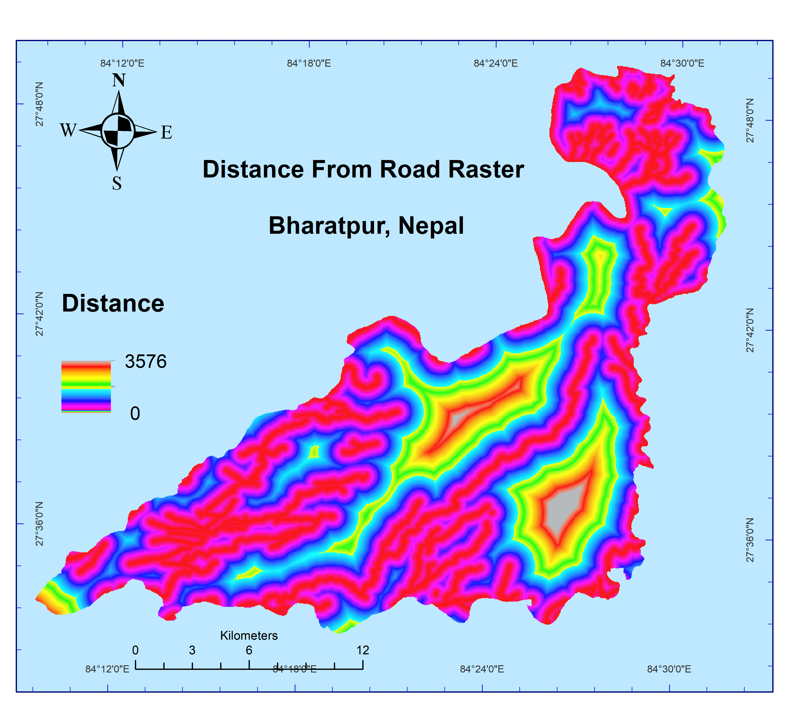
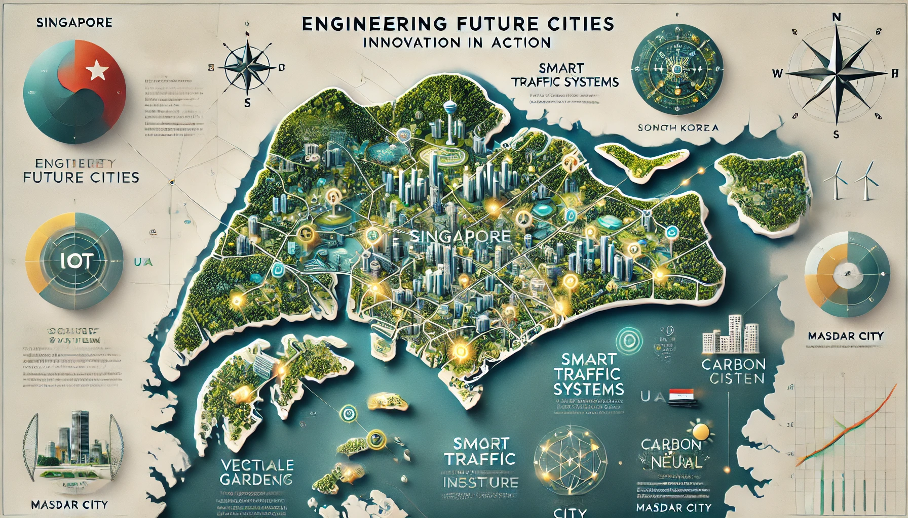
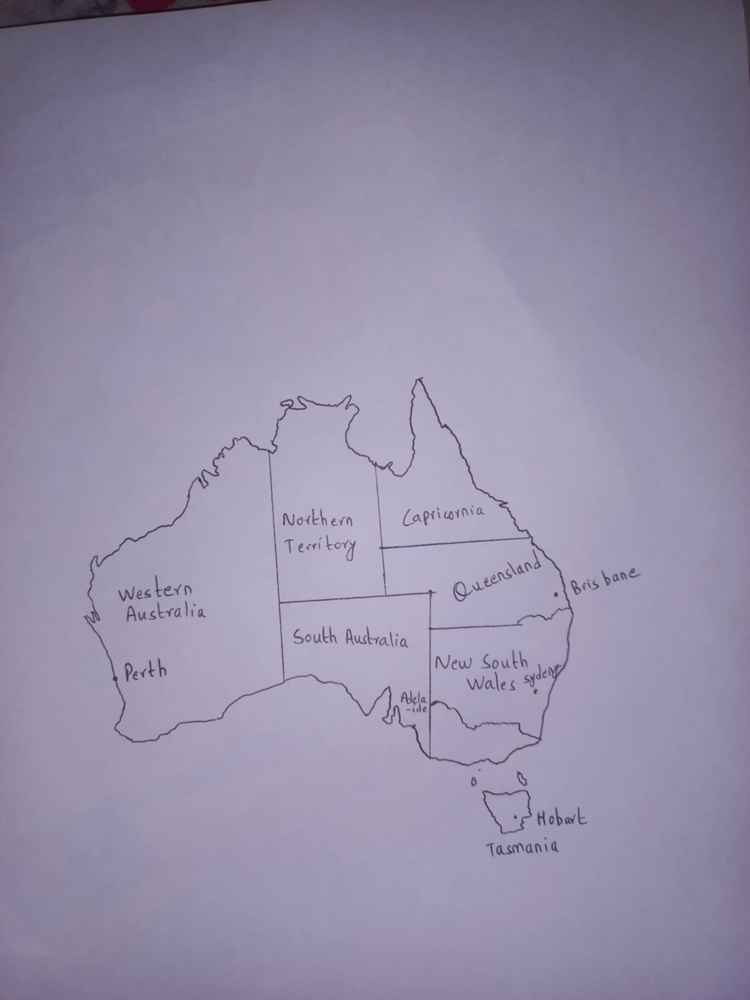
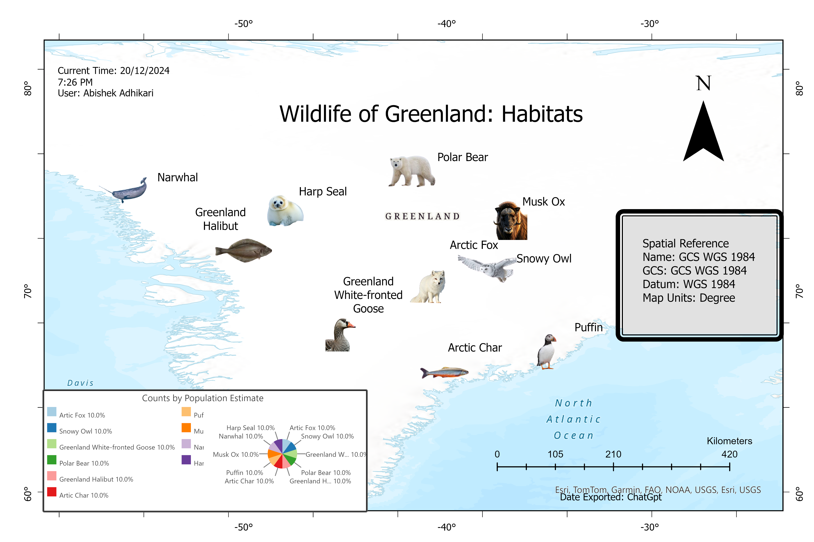
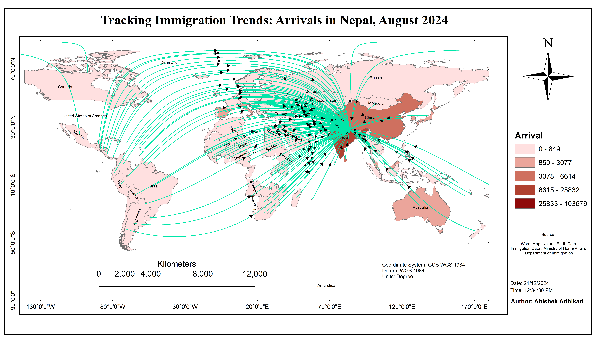
/Image/DAY_14.png)